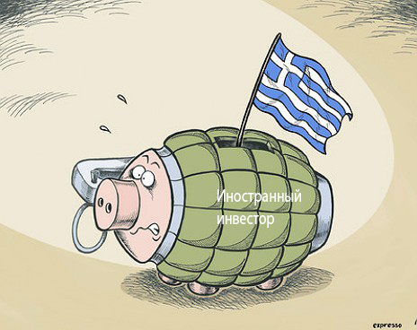

|
Александр ЗИБОРОВ
РЫНОК,
НА КОТОРЫЙ ПЛЮЮТ

Правительство, ау! Где вы, умудрённые мудростью государственные мужи? Почему не пользуетесь уникальными возможностями? Уже и Владимир Путин прямо приказал — нужны импортозамещение и новая индустриализация. Вперёд, и с песнёй! Ведь и санкции нас усиленно толкают к тому же. Но…
«Либеральное крыло» в российском правительстве лишь изображает потуги продвижения в указанном направлении. Польские яблоки заменяют турецкими и иными, а российская продукция остаётся невостребованной. Это заставляет скептиков именовать подобные действия саботажем.
Многие годы прежде нам твердили про то, что мировые рынки заняты, туда пробиться трудно, чуть ли не невозможно. Я сильно в этом сомневаюсь, но сейчас указываю на рынок невероятно огромных размеров, где мы можем стать хозяевами, настоящими и полными хозяевами. Это — внутренний российский рынок.
Повторю ещё раз: внутренний рынок России.
Только в ближайшей перспективе мы можем «освоить» сотни миллиардов долларов. А позже и куда больше.
Почему мы до последних недель продавали польские яблоки, а не курские, воронежские, рязанские, краснодарские, пензенские и так далее и тому подобное. Никогда прежде на Русь не завозили заморские яблочки. Ещё в эпоху крепостничества крестьяне научились торговать своими яблоками на базаре КРУГЛЫЙ ГОД. (Об этом писал, в частности, живший в те времена известный писатель П.Боборыкин.)
А зачем нам турецкие помидоры, израильская морковь, голландская картошка, литовская свекла, китайская капуста, испанские огурцы и тому подобное? Веками же всё это умели производить у себя!
Мало каким странам прежде мы уступали по количеству рыбы на столе, а теперь большая часть её завозится из-за границы.
И так далее, и тому подобное.
И есть ещё один очень серьёзный, если не сказать трагический, фактор. Большая часть торговых сетей принадлежит иностранцам или ими так или иначе контролируются, потому они фактически игнорируют российских производителей, закупая чуть ли не всё в своих странах. Россияне не могут попасть ни в эти торговые комплексы, ни на рынки.
Вот что нужно изменять в первую очередь: россияне должны стать хозяевами в сферах сбыта продукции. Пока там властвуют другие. В ущерб интересам стране и всему населению России.
Давным-давно я придумал афоризм-зиборизм: «И чего только нет на российских рынках — разве что отечественного производителя?!.»
Увы, он по-прежнему остаётся актуальным.
НАЗАД
|